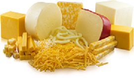
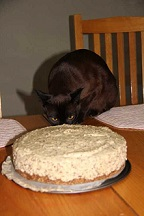
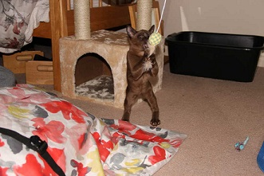
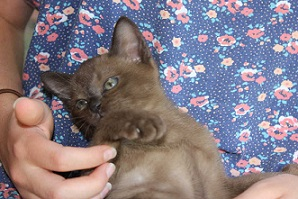
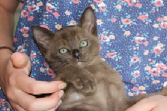
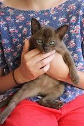
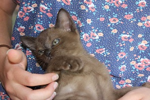
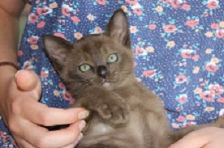
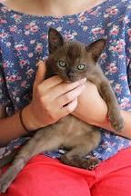

Alfie Likes Cheese!
The story of Alfie and Cheese...

Dietary Requirements
- Cheese
- Cheese
- Prawns
- Cheese
- Cheese
- and more cheese....... 
Conversations with Alfie and Cheese
Alfie.... Hi! My name is Alfie and I like Cheese!
Cheese.... Hi! I'm Cheese, but you will never know if I truly like Alfie!
Alfie...*eats Cheese*
THE END
Conspiracy Theory
The story of Alfie and Cheese...
Alfie likes Cheese, but does Cheese like Alfie?
What if Alfie is lactose intolerant? What if Cheese doesn't like Alfie?
What if Alfie is not a cat....he's a person!
What if Alfie hates Cheese and that is why he eats it... to kill it... nah that's not true.
Alfie's Owner
Isabel is the owner of Alfie and Cheese...
Cheese... Hey! Isabel doesn't own me!
Okay fine Cheese, Isabel doesn't own you...
Cheese... YESSSSSS! I'm free! I don't belong to anybo...
Alfie.... *munch munch*
Well, that was interesting...
Anyway, Isabel is Alfie's owner. Yeah. I think that's it.
About Us
Alfie is a cat. Therefore he does not have an email, facebook, twitter, snapchat, instagram, tumblr, flickr, vine, vimeo, Google+, youtube, linkedin, or any other social media.
Cheese is not supportive of any of these social media either.
Isabel does have an email, but no other social media. To contact her on information about Alfie and for possible press interviews and movie roles (we only accept the starring role!) email her at alfielikescheese@gmail.com
Thus, since we have such a shortage of social media and are relying on such primitive methods to make Alfie go viral, we would extremely appreciate your support in tweeting, instagraming, facebooking, tumblring and so on about Alfie under the hashtag #alfielikescheese. Thank you for your endless support!
Photo Gallary
Pictures of the Amazing Alfie and of Cheese
 




